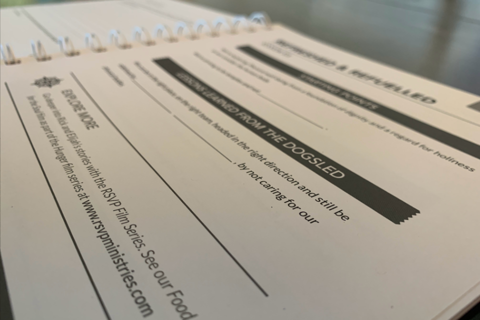
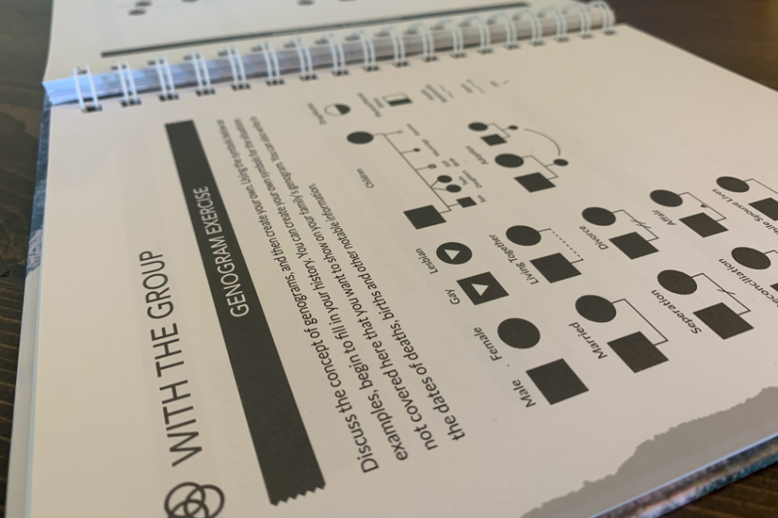
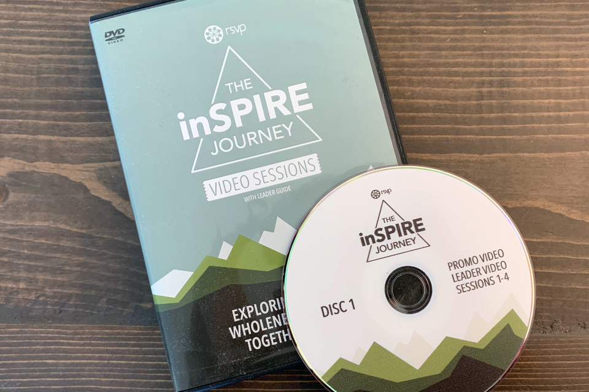
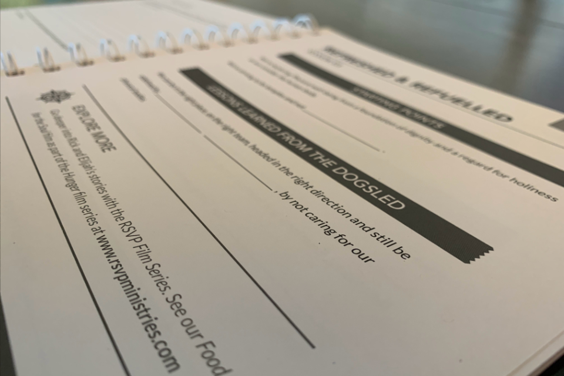
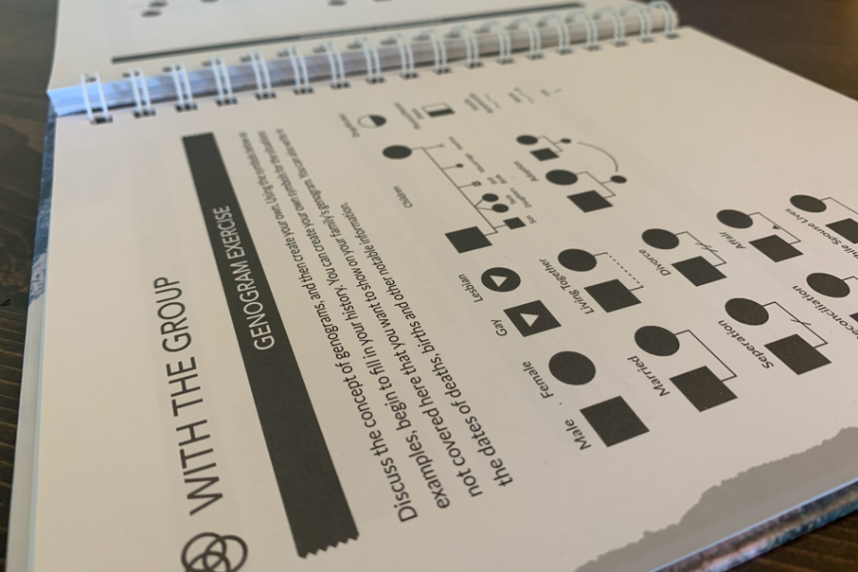
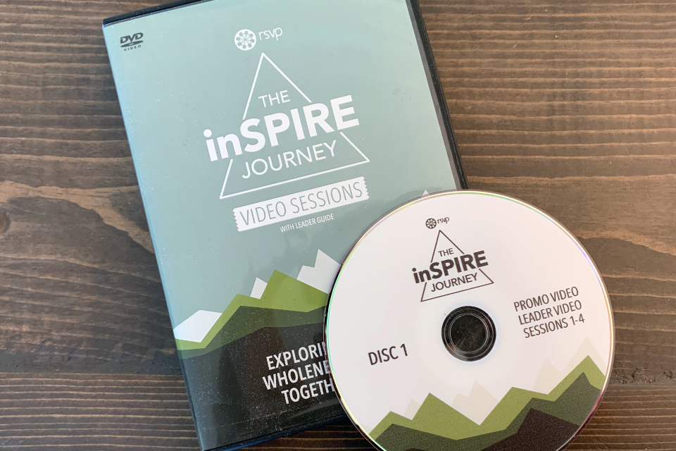

The inSPIRE Journey
The inSPIRE Journey provides a roadmap to greater personal wholeness by discussing the Spiritual, Physical, Intellectual, Relational & Emotional (SPIRE) areas of life and principles for how they can be managed in greater balance. Design was needed for the whole package, including a full Video Session DVD set, Leader Guide, and Participant Guide, which acts as a journal for each group member. The symbol of a range of mountain spires is discussed quite centrally in the material, so that was chosen as the theme to build the product's identity around.
The color green was chosen for its association with life and learning, and the abstract "spire" elements in different shades on each cover give the whole package a refreshingly modern look while tying each of the pieces together. The product emblem also harmoniously uses the SPIRE motif, with its triangular encasement of the letterforms. Both form and function of the Participant Guide was considered in it's design, using bold and easily readable fonts for the interior with plenty of designated space for writing in insights, with a hardcover coil-bound format contributing to it's ease of use.
 




